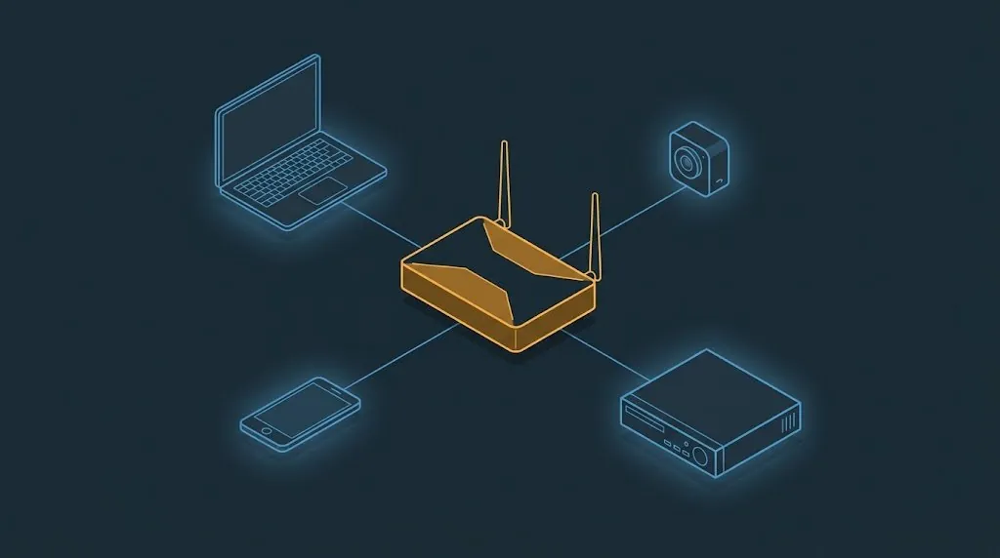
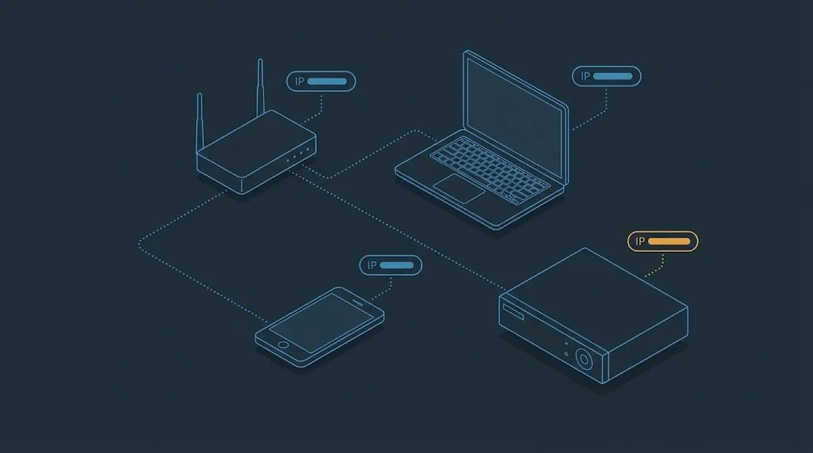
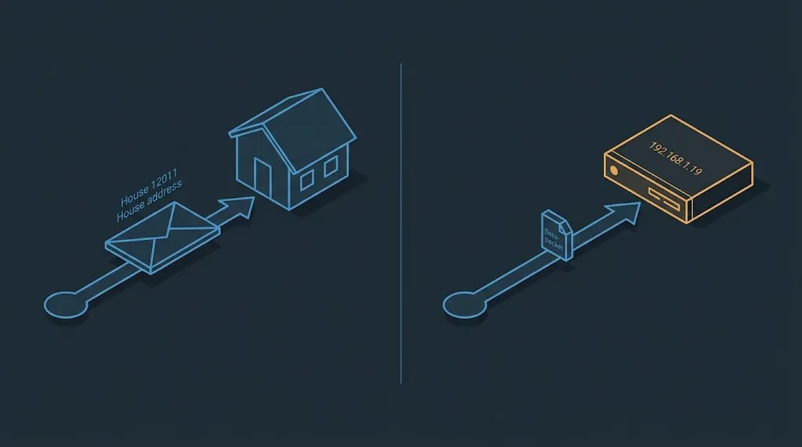
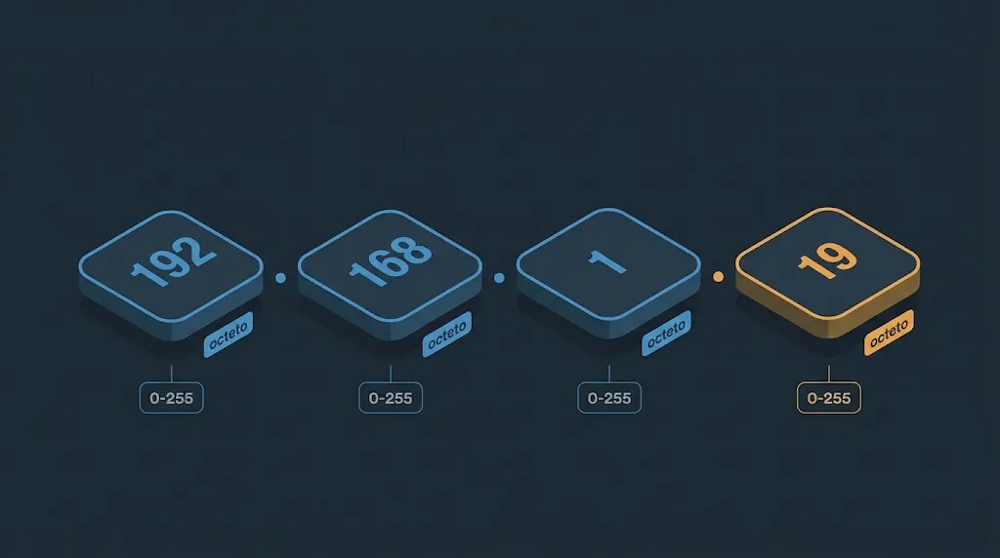
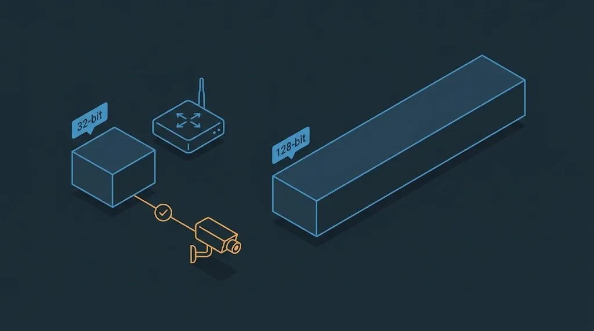
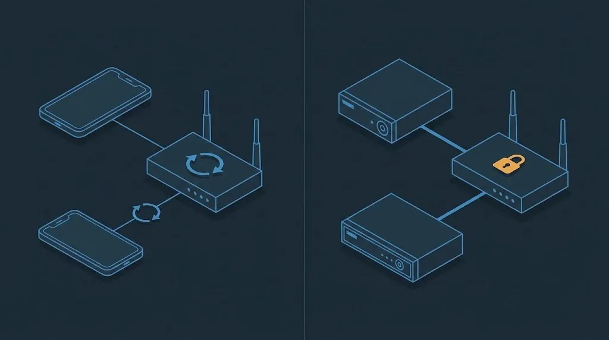
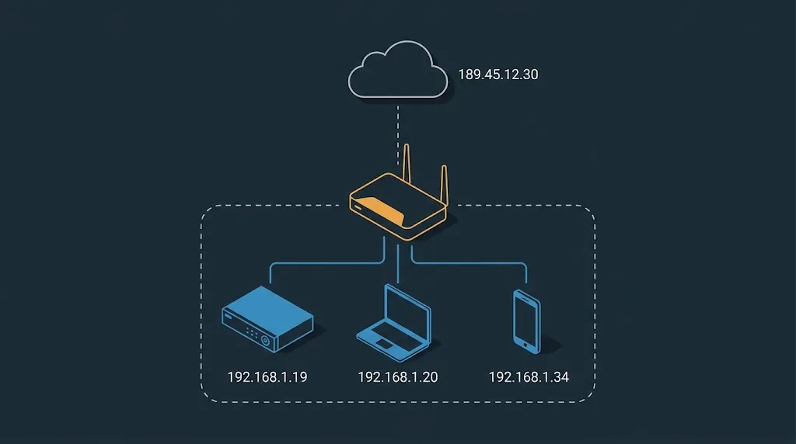

No formato mais comum, chamado IPv4, esse número aparece como 4 partes separadas por ponto — por exemplo 192.168.1.19. É esse formato que você vai ver o tempo todo nas telas de configuração de câmera, roteador e NVR.





Veja o que acontece, passo a passo, quando alguém de fora tenta acessar o NVR das câmeras direto pelo IP dele:

No próximo tópico vem a peça que realmente resolve o mistério de "por que eu não conseguia acessar a câmera de fora": a diferença entre IP privado e IP público.
O tutor corrige as abertas, junta com as objetivas e diz se você pode seguir ou o que revisar.
Suas respostas atuais saem da tela e você responde tudo de novo. Nada é apagado — a tentativa anterior fica no histórico.